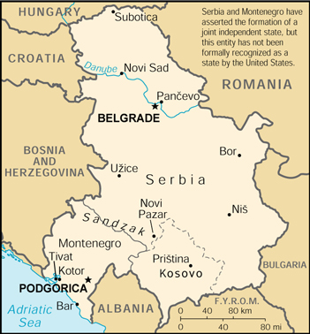

| Serbia and Montenegro |
|
|
 | |
| Introduction |
Background: Serbia and Montenegro have asserted the formation of a joint independent state, but this entity has not been formally recognized as a state by the US. The US view is that the Socialist Federal Republic of Yugoslavia (SFRY) has dissolved and that none of the successor republics represents its continuation. In 1999, massive expulsions by Serbs of ethnic Albanians living in the autonomous republic of Kosovo provoked an international response, including the bombing of Serbia and the stationing of NATO and Russian peacekeepers in Kosovo.
| Geography |
Location: Southeastern Europe, bordering the Adriatic Sea, between Albania and Bosnia and Herzegovina
Geographic coordinates: 44 00 N, 21 00 E
Map references: Europe
Area:
total:
102,350 sq km (Serbia 88,412 sq km; Montenegro 13,938 sq km)
land:
102,136 sq km (Serbia 88,412 sq km; Montenegro 13,724 sq km)
water:
214 sq km (Serbia 0 sq km; Montenegro 214 sq km)
Area - comparative: slightly smaller than Kentucky (Serbia is slightly larger than Maine; Montenegro is slightly smaller than Connecticut)
Land boundaries:
total:
2,246 km
border countries:
Albania 287 km (114 km with Serbia, 173 km with Montenegro), Bosnia and Herzegovina 527 km (312 km with Serbia, 215 km with Montenegro), Bulgaria 318 km (with Serbia), Croatia (north) 241 km (with Serbia), Croatia (south) 25 km (with Montenegro), Hungary 151 km (with Serbia), The Former Yugoslav Republic of Macedonia 221 km (with Serbia), Romania 476 km (with Serbia)
note:
the internal boundary between Montenegro and Serbia is 211 km
Coastline: 199 km (Montenegro 199 km, Serbia 0 km)
Maritime claims: NA
Climate: in the north, continental climate (cold winters and hot, humid summers with well distributed rainfall); central portion, continental and Mediterranean climate; to the south, Adriatic climate along the coast, hot, dry summers and autumns and relatively cold winters with heavy snowfall inland
Terrain: extremely varied; to the north, rich fertile plains; to the east, limestone ranges and basins; to the southeast, ancient mountains and hills; to the southwest, extremely high shoreline with no islands off the coast
Elevation extremes:
lowest point:
Adriatic Sea 0 m
highest point:
Daravica 2,656 m
Natural resources: oil, gas, coal, antimony, copper, lead, zinc, nickel, gold, pyrite, chrome, hydro power
Land use:
arable land:
NA%
permanent crops:
NA%
permanent pastures:
NA%
forests and woodland:
NA%
other:
NA%
Irrigated land: NA sq km
Natural hazards: destructive earthquakes
Environment - current issues: pollution of coastal waters from sewage outlets, especially in tourist-related areas such as Kotor; air pollution around Belgrade and other industrial cities; water pollution from industrial wastes dumped into the Sava which flows into the Danube
Environment - international agreements:
party to:
none of the selected agreements
signed, but not ratified:
none of the selected agreements
Geography - note: controls one of the major land routes from Western Europe to Turkey and the Near East; strategic location along the Adriatic coast
| People |
Population:
10,662,087 (Serbia - 9,981,929; Montenegro - 680,158)
note:
all data dealing with population is subject to considerable error because of the dislocations caused by military action and ethnic cleansing (July 2000 est.)
Age structure:
0-14 years:
Serbia - 19.95% (male 1,028,355; female 963,366); Montenegro - 22.05% (male 77,582; female 72,395)
15-64 years:
Serbia - 65.22% (male 3,187,746; female 3,322,425); Montenegro - 66.16% (male 222,095; female 227,923)
65 years and over:
Serbia - 14.83% (male 638,204; female 841,833); Montenegro - 11.79% (male 32,400; female 47,763) (2000 est.)
Population growth rate: Serbia - 0.739%; Montenegro - -12.22% (2000 est.)
Birth rate: Serbia - 12.20 births/1,000 population; Montenegro - 14.9 births/1,000 population (2000 est.)
Death rate: Serbia - 11.08 deaths/1,000 population; Montenegro - 7.9 deaths/1,000 population (2000 est.)
Net migration rate: Serbia - 6.26 migrants/1,000 population; Montenegro - -29.18 migrant(s)/1,000 population (2000 est.)
Sex ratio:
at birth:
Serbia - 1.08 male(s)/female; Montenegro - 1.09 male(s)/female
under 15 years:
Serbia - 1.07 male(s)/female; Montenegro - 1.07 male(s)/female
15-64 years:
Serbia - 0.96 male(s)/female; Montenegro - 0.97 male(s)/female
65 years and over:
Serbia - 0.76 male(s)/female; Montenegro - 0.68 male(s)/female
total population:
Serbia - 0.95 male(s)/female; Montenegro - 0.95 male(s)/female (2000 est.)
Infant mortality rate: Serbia - 20.13 deaths/1,000 live births; Montenegro - 10.97 deaths/1,000 live births (2000 est.)
Life expectancy at birth:
total population:
Serbia - 72.39 years; Montenegro - 75.46 years
male:
Serbia - 69.31 years; Montenegro - 71.45 years
female:
Serbia - 75.72 years; Montenegro - 79.82 years (2000 est.)
Total fertility rate: Serbia - 1.70 children born/woman; Montenegro - 1.96 children born/woman (2000 est.)
Nationality:
noun:
Serb(s); Montenegrin(s)
adjective:
Serbian; Montenegrin
Ethnic groups: Serb 62.6%, Albanian 16.5%, Montenegrin 5%, Yugoslav 3.4%, Hungarian 3.3%, other 9.2% (1991)
Religions: Orthodox 65%, Muslim 19%, Roman Catholic 4%, Protestant 1%, other 11%
Languages: Serbian 95%, Albanian 5%
Literacy:
definition:
NA
total population:
NA%
male:
NA%
female:
NA%
| Government |
Country name:
conventional long form:
none
conventional short form:
Serbia and Montenegro
local long form:
none
local short form:
Srbija-Crna Gora
note:
Serbia and Montenegro has self-proclaimed itself the "Federal Republic of Yugoslavia" (FRY) but the US view is that the Socialist Federal Republic of Yugoslavia (SFRY) has dissolved and that none of the successor republics represents its continuation
Data code: Serbia - SR; Montenegro - MW
Government type: republic
Capital: Belgrade (Serbia), Podgorica (Montenegro)
Administrative divisions: 2 republics (republike, singular - republika); and 2 nominally autonomous provinces* (autonomn pokrajine, singular - autonomna pokrajina); Kosovo*, Montenegro, Serbia, Vojvodina*
Independence: 11 April 1992 (Federal Republic of Yugoslavia or FRY formed as self-proclaimed successor to the Socialist Federal Republic of Yugoslavia or SFRY)
National holiday: St. Vitus Day, 28 June
Constitution: 27 April 1992
Legal system: based on civil law system
Suffrage: 16 years of age, if employed; 18 years of age, universal
Executive branch:
chief of state:
President Slobodan MILOSEVIC (since 23 July 1997); note - Milan MILUTINOVIC is president of Serbia (since 21 December 1997); Milo DJUKANOVIC is president of Montenegro (since 21 December 1997)
head of government:
Prime Minister Momir BULATOVIC (since 20 May 1998); Deputy Prime Ministers Nikola SAINOVIC (since 15 September 1995), Jovan ZEBIC (since 9 April 1998), and Vladan KUTLESIC (since 20 March 1997), Danilo VUKSANOVIC (since 20 May 1998), Tomislav NIKOLIC (since 12 August 1999), Maja Gojkovic (since 12 August 1999)
cabinet:
Federal Executive Council
elections:
president elected by the Federal Assembly for a four-year term; election last held 23 July 1997 (next to be held NA 2001); prime minister appointed by the president
election results:
Slobodan MILOSEVIC elected president; percent of legislative vote - Slobodan MILOSEVIC 90%
Legislative branch:
bicameral Federal Assembly or Savezna Skupstina consists of the Chamber of Republics or Vece Republika (40 seats - 20 Serbian, 20 Montenegrin; members distributed on the basis of party representation in the republican assemblies to serve four-year terms) and the Chamber of Citizens or Vece Gradjana (138 seats - 108 Serbian with half elected by constituency majorities and half by proportional representation, 30 Montenegrin with six elected by constituency and 24 proportionally; members serve four-year terms)
elections:
Chamber of Republics - last held 24 December 1996 (next to be held NA 2000); Chamber of Citizens - last held 3 November 1996 (next to be held NA 2000)
election results:
Chamber of Republics - percent of vote by party - NA; seats by party - NA; note - seats are filled on a proportional basis to reflect the composition of the legislatures of the republics of Montenegro and Serbia; note - since 1998 Serbia has effectively barred Montenegro from its constitutional right to delegate deputies to the Chamber of Republics; Chamber of Citizens - percent of vote by party - NA; seats by party - SPS/JUL/ND 64, Zajedno coalition 22, DPS 20, SRS 16, NS 8, SVM 3, other 5; note - Zajedno coalition included SPO, DS, GSS
Judicial branch: Federal Court or Savezni Sud, judges are elected by the Federal Assembly for nine-year terms; Constitutional Court, judges are elected by the Federal Assembly for nine-year terms
Political parties and leaders: Alliance of Vojvodina Hungarians or SVM [Jozsef KASZA]; Civic Alliance of Serbia or GSS [Goran SVILANOVIC, chairman]; Democratic Alliance of Kosovo or LDK [Dr. Ibrahim RUGOVA, president]; Democratic Alliance of Vojvodina Croats or DSHV [Bela TONKOVIC]; Democratic Community of Vojvodina Hungarians or DZVM [Sandor PALL]; Democratic League of Albanians [Rexhep QOSJA]; Democratic Party or DS [Zoran DJINDJIC]; Democratic Party of Serbia or DSS [Vojislav KOSTUNICA]; Democratic Party of Socialists of Montenegro or DPS [Milo DJUKANOVIC]; League of Social Democrats of Vojvodina or LSV [Nenad CANAK]; Liberal Alliance of Montenegro [Slavko PEROVIC]; New Democracy or ND [Dusan MIHAJLOVIC]; Parliamentary Party of Kosovo or PPK [Bajram KOSUMI]; Party for the Democratic Progress of Kosovo or PPDK [Hashim THACI]; Party of Democratic Action or SDA [Dr. Sulejman UGLJANIN]; People's Party of Montenegro or NS [Novak KILIBARDA]; Reformist Democratic Party of Vojvodina or RDSV [Miodrag JSAKOV]; Serbian Radical Party or SRS [Vojislav SESELJ]; Serbian Renewal Movement or SPO [Vuk DRASKOVIC, president]; Serbian Socialist Party or SPS (former Communist Party) [Slobodan MILOSEVIC]; Social Democratic Party of Montenegro or SDP [Zarko RAKCEVIC]; Socialist People's Party of Montenegro or SNP [Momir BULATOVIC]; Yugoslav United Left or JUL [Mirjana MARKOVIC (MILOSEVIC's wife)]
Political pressure groups and leaders: National Movement for the Liberation of Kosovo or LKCK [Sabit GASHI]; The People's Movement for Kosovo or LPK [leader NA]
International organization participation: ICFTU, IHO, IMO, Inmarsat, Intelsat, IOC, ISO, ITU, NAM, OPCW, UNHCR
Diplomatic representation in the US: the Embassy of the Former Socialist Federal Republic of Yugoslavia ceased operations 25 March 1999
Diplomatic representation from the US: at present, the US has no diplomatic representation in Serbia and Montenegro; the US office in Pristina, Kosovo, was opened in 1999; its members are not accredited to a foreign government
| Economy |
Economy - overview: The swift collapse of the Yugoslav federation in 1991 has been followed by highly destructive warfare, the destabilization of republic boundaries, and the breakup of important interrepublic trade flows. Output in Serbia and Montenegro dropped by half in 1992-93. Like the other former Yugoslav republics, it had depended on its sister republics for large amounts of energy and manufactures. Wide differences in climate, mineral resources, and levels of technology among the republics accentuated this interdependence, as did the communist practice of concentrating much industrial output in a small number of giant plants. The breakup of many of the trade links, the sharp drop in output as industrial plants lost suppliers and markets, and the destruction of physical assets in the fighting all have contributed to the economic difficulties of the republics. One singular factor in the economic situation of Serbia is the continuation in office of a government that is primarily interested in political and military mastery, not economic reform. Hyperinflation ended with the establishment of a new currency unit in June 1993; prices were relatively stable from 1995 through 1997, but inflationary pressures resurged in 1998. Reliable statistics continue to be hard to come by, and the GDP estimate is extremely rough. The economic boom anticipated by the government after the suspension of UN sanctions in December 1995 has failed to materialize. Government mismanagement of the economy is largely to blame, but the damage to Serbia's infrastructure and industry by the NATO bombing during the war in Kosovo have added to problems. Also, sanctions continue to isolate Belgrade from international financial institutions; an investment ban and asset freeze imposed in 1998 and the oil embargo imposed during the NATO bombing remain in place.
GDP: purchasing power parity - $20.6 billion (1999 est.)
GDP - real growth rate: -20% (1999 est.)
GDP - per capita: purchasing power parity - $1,800 (1999 est.)
GDP - composition by sector:
agriculture:
20%
industry:
50%
services:
30% (1998 est.)
Population below poverty line: NA%
Household income or consumption by percentage share:
lowest 10%:
NA%
highest 10%:
NA%
Inflation rate (consumer prices): 42% (1999 est.)
Labor force: 1.6 million (1999 est.)
Labor force - by occupation: agriculture NA%, industry NA%, services NA%
Unemployment rate: 30% (1999 est.)
Budget:
revenues:
$NA
expenditures:
$NA, including capital expenditures of $NA
Industries: machine building (aircraft, trucks, and automobiles; tanks and weapons; electrical equipment; agricultural machinery); metallurgy (steel, aluminum, copper, lead, zinc, chromium, antimony, bismuth, cadmium); mining (coal, bauxite, nonferrous ore, iron ore, limestone); consumer goods (textiles, footwear, foodstuffs, appliances); electronics, petroleum products, chemicals, and pharmaceuticals
Industrial production growth rate: -22% (1999 est.)
Electricity - production: 38.84 billion kWh (1998)
Electricity - production by source:
fossil fuel:
67.88%
hydro:
32.12%
nuclear:
0%
other:
0% (1998)
Electricity - consumption: 36.141 billion kWh (1998)
Electricity - exports: 20 million kWh (1998)
Electricity - imports: 40 million kWh (1998)
Agriculture - products: cereals, fruits, vegetables, tobacco, olives; cattle, sheep, goats
Exports: $1.5 billion (1999)
Exports - commodities: manufactured goods, food and live animals, raw materials
Exports - partners: Bosnia and Herzegovina, Italy, The Former Yugoslav Republic of Macedonia, Germany (1998)
Imports: $3.3 billion (1999)
Imports - commodities: machinery and transport equipment, fuels and lubricants, manufactured goods, chemicals, food and live animals, raw materials
Imports - partners: Germany, Italy, Russia, The Former Yugoslav Republic of Macedonia (1998)
Debt - external: $14.1 billion (1999 est.)
Economic aid - recipient: $NA
Currency: 1 Yugoslav New Dinar (YD) = 100 paras; Montenegro made the German deutsche mark (1 deutsche mark (DM) = 100 pfennige) legal tender alongside the Yugoslav dinar (1999)
Exchange rates: Yugoslav New Dinars (YD) per US $1 - official rate: 10.0 (December 1998), 5.85 (December 1997), 5.02 (September 1996), 1.5 (early 1995); black market rate: 14.5 (December 1998), 8.9 (December 1997), 2 to 3 (early 1995)
Fiscal year: calendar year
| Communications |
Telephones - main lines in use: 2.017 million (1995)
Telephones - mobile cellular: 38,552 (1999)
Telephone system:
domestic:
NA
international:
satellite earth station - 1 Intelsat (Atlantic Ocean)
Radio broadcast stations: AM 113, FM 194, shortwave 2 (1998)
Radios: 3.15 million (1997)
Television broadcast stations: more than 771 (including 86 strong stations and 685 low-power stations, plus 20 repeaters in the principal networks; also numerous local or private stations in Serbia and Vojvodina) (1997)
Televisions: 2.75 million (1997)
Internet Service Providers (ISPs): 6 (1999)
| Transportation |
Railways:
total:
4,095 km
standard gauge:
4,095 km 1.435-m gauge (1,377 km partially electrified since 1992)
note:
during to the 1999 Kosovo conflict, the Serbian rail system suffered significant damage due to bridge destruction; many rail bridges have been rebuilt, but the bridge over the Danube at Novi Sad was still down in early 2000; however, a by-pass is available; Montenegrin rail lines remain intact
Highways:
total:
48,603 km
paved:
28,822 km (including 560 km of expressways)
unpaved:
19,781 km (1998 est.)
note:
because of the 1999 Kosovo conflict, many road bridges were destroyed; since the end of the conflict in June 1999, Serbia has had a rapid reconstruction program to either reconstruct bridges or build by-pass routes
Waterways: 587 km; Danube River runs through Serbia connecting Europe with the Black Sea; in early 2000 the river was obstructed at Novi Sad due to a pontoon bridge; a canal system in north Serbia is available to by-pass damage, however, lock size is limited (1999)
Pipelines: crude oil 415 km; petroleum products 130 km; natural gas 2,110 km
Ports and harbors: Bar, Belgrade, Kotor, Novi Sad, Pancevo, Tivat, Zelenika
Airports: 48 (Serbia 43, Montenegro 5) (1999 est.)
Airports - with paved runways:
total:
19 (Serbia 16, Montenegro 3)
over 3,047 m:
2 (Serbia 2, Montenegro 0)
2,438 to 3,047 m:
5 (Serbia 3, Montenegro 2)
1,524 to 2,437 m:
5 (Serbia 4, Montenegro 1)
914 to 1,523 m:
2 (Serbia 2, Montenegro 0)
under 914 m:
5 (Serbia 5, Montenegro 0) (1999 est.)
Airports - with unpaved runways:
total:
29 (Serbia 27, Montenegro 2)
1,524 to 2,437 m:
2 (Serbia 2, Montenegro 0)
914 to 1,523 m:
13 (Serbia 12, Montenegro 1)
under 914 m:
14 (Serbia 13, Montenegro 1) (1999 est.)
Heliports: 2 (1999 est.)
| Military |
Military branches: Army (including ground forces with border troops, naval forces, air and air defense forces)
Military manpower - military age: Serbia - 19 years of age; Montenegro - 19 years of age
Military manpower - availability:
males age 15-49:
2,603,224 (Serbia - 2,424,990; Montenegro - 178,234) (2000 est.)
Military manpower - fit for military service:
males age 15-49:
2,089,191 (Serbia - 1,945,422; Montenegro - 143,769) (2000 est.)
Military manpower - reaching military age annually:
males:
82,553 (Serbia - 76,856; Montenegro - 5,697) (2000 est.)
Military expenditures - dollar figure: $911 million (FY99)
Military expenditures - percent of GDP: 6.5% (FY99)
| Transnational Issues |
Disputes - international: disputes with Bosnia and Herzegovina over Serbian populated areas; Albanian majority in Kosovo seeks independence from Serbian republic; Serbia and Montenegro is disputing Croatia's claim to the Prevlaka Peninsula in southern Croatia because it controls the entrance to Boka Kotorska in Montenegro; Prevlaka is currently under observation by the UN military observer mission in Prevlaka (UNMOP); the border commission formed by The Former Yugoslav Republic of Macedonia and Serbia and Montenegro in April 1996 to resolve differences in delineation of their border has made no progress so far
Illicit drugs: transshipment point for Southwest Asian heroin moving to Western Europe on the Balkan route